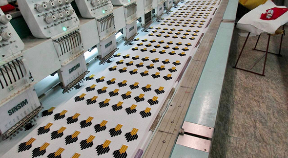
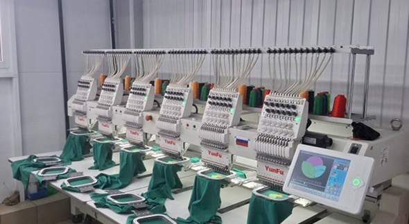
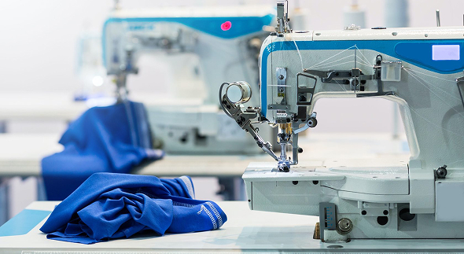
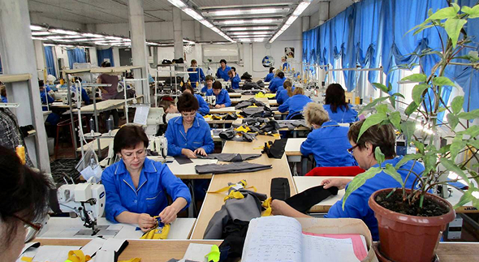
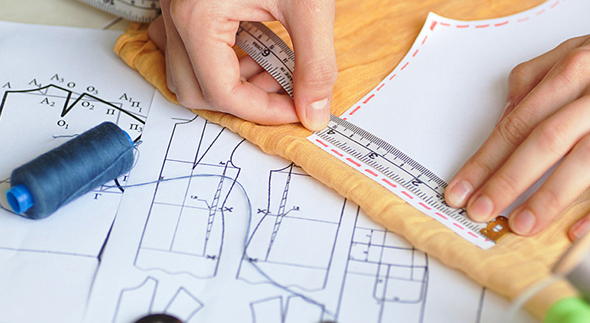
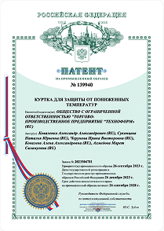
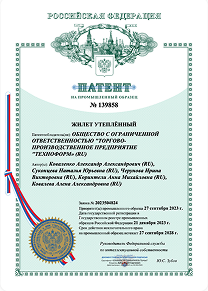
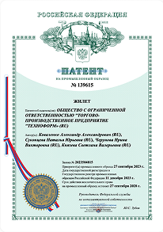

о компании
Технологии, качество и надежность для вашего бизнеса. Надежная спецодежда для профессионалов любых отраслей.
Компания сегодня:
ТПП «ТЕХНОФОРМ» — это современное предприятие, специализирующееся на производстве качественной, функциональной и надежной специальной и корпоративной одежды для предприятий различного профиля. На протяжении многих лет мы создаём профессиональные решения для предприятий, где защита сотрудников — ключевой фактор стабильной и эффективной работы.
Мы уверены: спецодежда должна не просто соответствовать нормам, а реально защищать и служить долго. Именно поэтому в основе каждого изделия — продуманная конструкция, проверенные материалы и высокие стандарты производства.
история компании
Технологии производства
Мы предлагаем широкий ассортимент специальной и корпоративной одежды для различных отраслей:
- Нефтегазовая и энергетическая отрасль
- Промышленность и производство
- Строительство
- Логистика и складские комплексы
- Медицина и сервисные службы
- Аграрный сектор
Каждое изделие создаётся с учетом условий эксплуатации, требований охраны труда и реальных задач работников.
Наши коллекции включают:
спецодежда
индивидуальной защиты
ассортимент





Мы стремимся не просто выпускать одежду, а быть настоящим партнёром для бизнеса. ТПП «ТЕХНОФОРМ» — это стабильность, качество, гибкость и внимание к деталям. Мы с уважением относимся к каждому заказчику, понимаем специфику отраслей и готовы предложить решения, которые работают на безопасность и престиж вашей компании.
Наши клиенты:
В июне 2021 года наше предприятие стало единственным в России победителем Многостороннего конкурса в рамках Европейской программы IRA-SME «Интернационализация» и получило грант Фонда содействия инновациям на разработку новой термофункциональной защитной одежды на основе аэрогелевых волокнистых материалов в размере 15 000 000 рублей.
Фонд содействия инновациям оказывает поддержку динамично развивающимся компаниям, успешно реализующим разработки востребованной на рынке высокотехнологичной продукции и реализующим совместные проекты с участием зарубежных партнеров. В результате интеллектуальной деятельности были созданы 4 промышленных образца: КУРТКА УТЕПЛЕННАЯ, КУРТКА ДЛЯ ЗАЩИТЫ ОТ ПОНИЖЕННЫХ ТЕМПЕРАТУР, ЖИЛЕТ УТЕПЛЕННЫЙ, ЖИЛЕТ. (Фото патентов).



«ТПП «Техноформ» – это больше, чем производство спецодежды. Мы создаем современные защитные решения, в которых инновации напрямую повышают безопасность, комфорт и эффективность работы персонала.
Основным инновационным направлением компании «ТПП «Техноформ» является разработка и производство спецодежды для защиты от пониженных и экстремально низких температур. Мы создаём решения для регионов с суровыми климатическими условиями — Крайнего Севера, Арктической зоны, северных и восточных регионов России, где надёжная защита от холода является критически важным фактором безопасности и эффективности труда.
В основе продукции «ТПП «Техноформ» – передовые материалы и технологичные ткани. Мы используем: износостойкие и долговечные материалы, современные утеплители, которые ранее никогда не применялись при производстве спецодежды. Каждый материал отобран с учётом реальных условий производства и проверен на соответствие стандартам безопасности.
Мы уверены: спецодежда должна не ограничивать, а помогать работать. Поэтому в разработке моделей мы применяем: эргономичный крой, учитывающий анатомию и движения человека; цифровое моделирование и точные лекала. Результат — одежда, которую действительно удобно носить в течение всей рабочей смены.
Инновации «ТПП «Техноформ» — не только в изделиях, но и в самом производстве. Автоматизированный раскрой и пошив, многоступенчатый контроль качества, цифровое управление заказами и сроками позволяет нам гарантировать стабильное качество и точное выполнение обязательств перед клиентами.
Каждая модель проходит лабораторные испытаний, проверку в реальных рабочих условиях, оценку соответствия требованиям охраны труда. Мы постоянно совершенствуем продукцию, опираясь на обратную связь от наших партнёров.
«ТПП «Техноформ» - инновации, которым можно доверять.